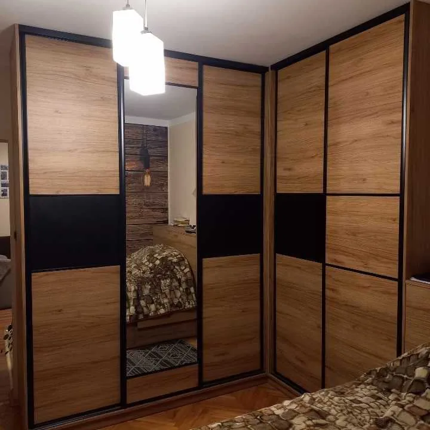
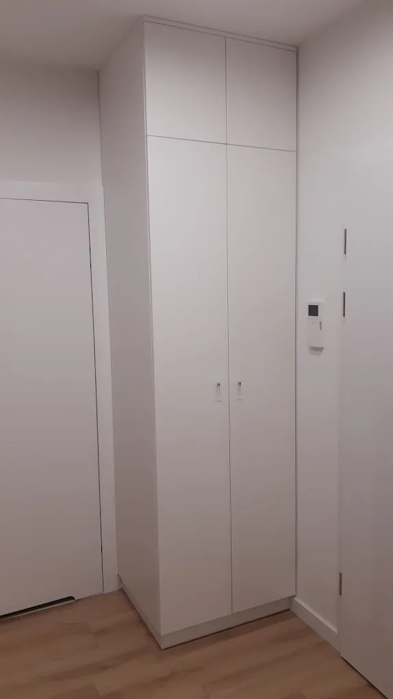
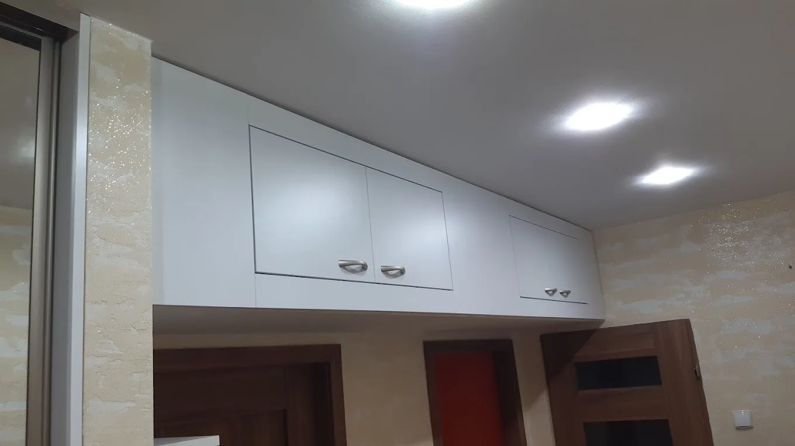
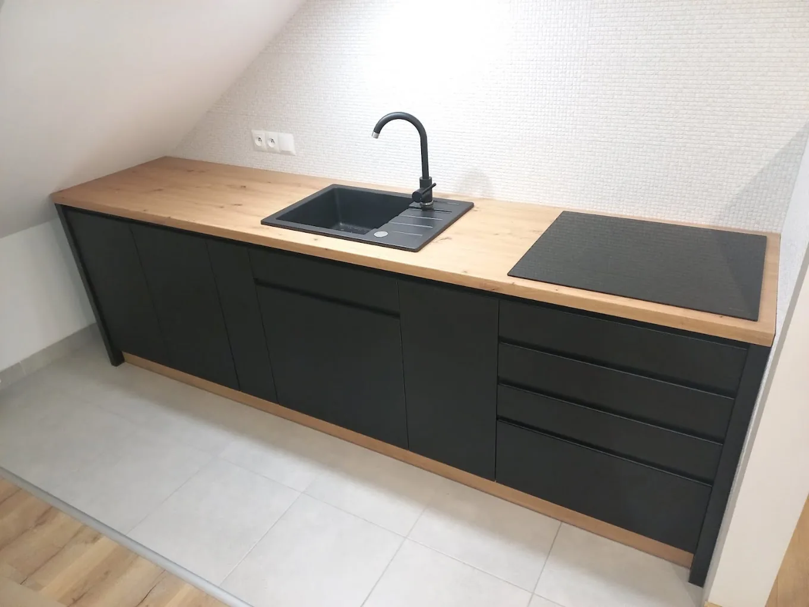
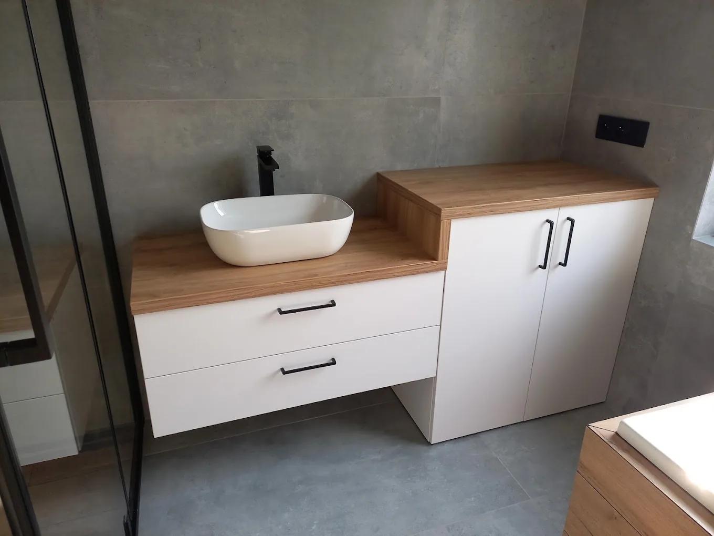
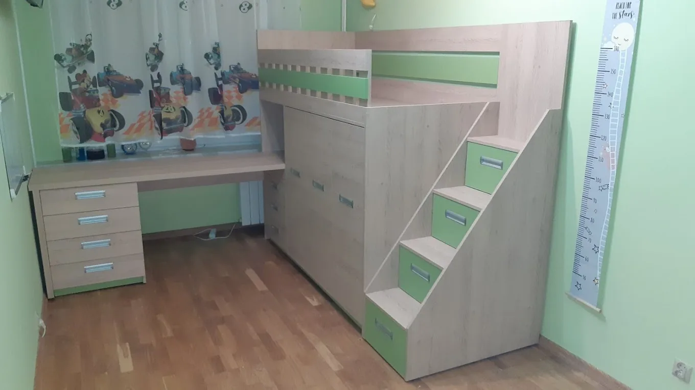
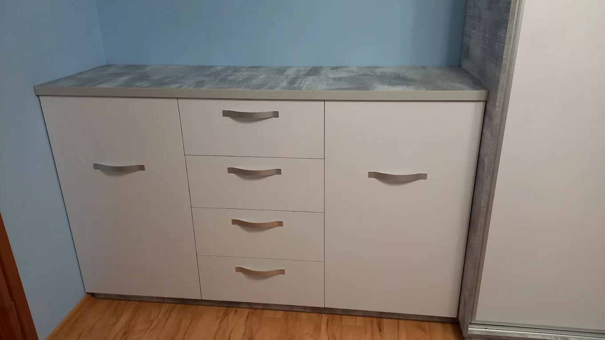
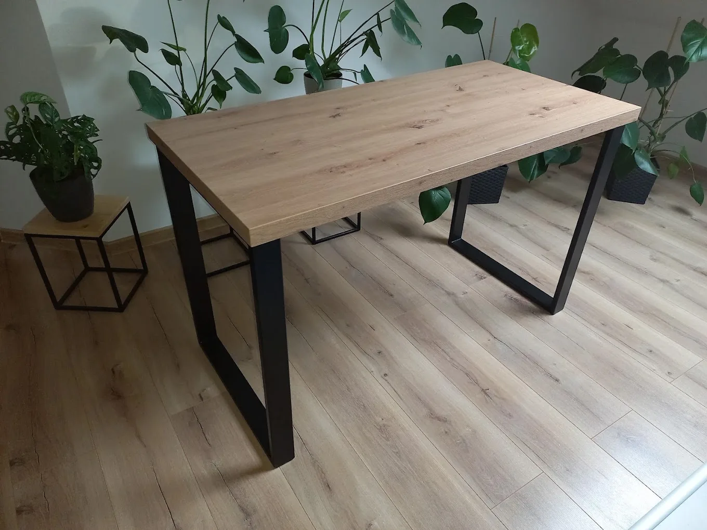
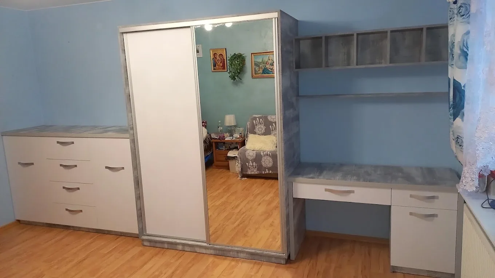

Szafy z drzwiami przesuwnymi
Szafy wnękowe i narożne od podłogi do sufitu. Drzwi z płyty, lustra lub szkła, w środku półki, drążki i szuflady.
- Wnętrze rozplanowane pod Twoje rzeczy
- Fronty łączone z lustrem lub szkłem
Projektuję, wykonuję i montuję meble pod konkretne wnętrze. Poniżej znajdziesz, czym zajmuję się na co dzień, razem ze zdjęciami prac dla klientów.

Szafy wnękowe i narożne od podłogi do sufitu. Drzwi z płyty, lustra lub szkła, w środku półki, drążki i szuflady.

Wykorzystuję każdy centymetr wnęki w przedpokoju, sypialni czy łazience. Fronty bezuchwytowe lub z uchwytami, w kolorze ścian albo w drewnie.

Szafki i szafy docięte pod skos dachu. Gotowe meble rzadko pasują na poddaszu, a zabudowa na wymiar zamienia skosy w schowki.

Zabudowy kuchenne z blatem, wycięciami pod zlew i płytę oraz szufladami tam, gdzie są najwygodniejsze.

Szafki pod umywalkę z blatem, zabudowy pralki, wysokie słupki i półki we wnękach. Dobrze wykorzystana nawet mała łazienka.

Łóżka na antresoli ze schodkami z szufladami, biurka, szafy i półki. Kolory dobrane do pokoju i do dziecka.

Komody, szafki RTV i szafki wolnostojące o szerokości dopasowanej do ściany, z szufladami i drzwiczkami w potrzebnych proporcjach.

Stoły, biurka i kwietniki z blatami w dekorze drewna na czarnych stalowych stelażach. Proste formy, które pasują do nowoczesnych wnętrz.

Szafa, komoda, biurko i półki zaprojektowane razem, w jednym dekorze i w jednej linii. Pokój wygląda spójnie, a nie jak zbiór przypadkowych mebli.
Nie zawsze trzeba wymieniać całą zabudowę. Często wystarczą nowe fronty albo kilka wymienionych elementów.
Nowe drzwiczki i czoła szuflad montowane na sprawnych korpusach. Zmieniasz kolor i styl kuchni czy szafy dużo mniejszym kosztem niż przy nowej zabudowie.
Wymieniam zużyte blaty, zawiasy, prowadnice, półki i uchwyty. Montuję też pojedyncze elementy dorabiane do mebli, które już stoją.
Zadzwoń i opisz miejsce. Jeśli trzeba, przyjadę zmierzyć wnętrze i powiem, co da się z nim zrobić.